North-West Regional Administration Coordination Platform
These pictures are the live screens of the Office of the Governor’s coordination desk. Green, red, and yellow follow the flag of Cameroon. The same Overview is shared. Each office then sees its own queue, and only the actions its role may take.
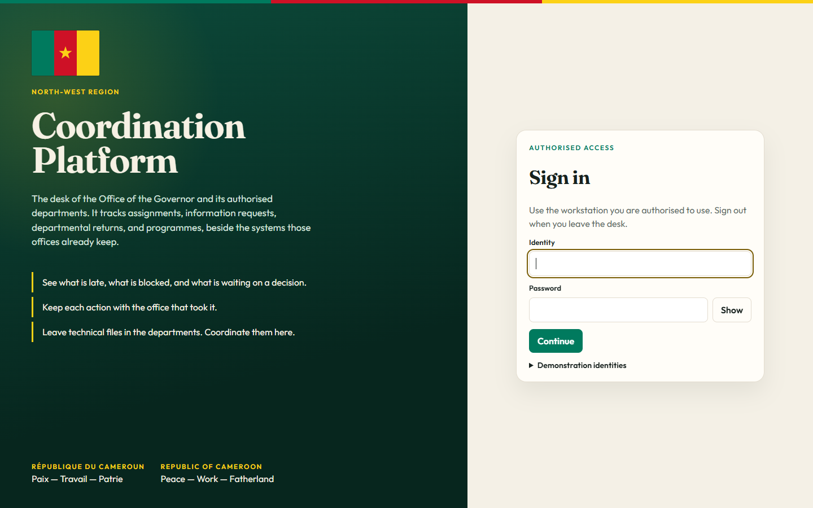
The front door. An official enters an identity and a password, then a duty code on the next screen. The flag and the motto, “Paix — Travail — Patrie / Peace — Work — Fatherland”, sit on the green panel.
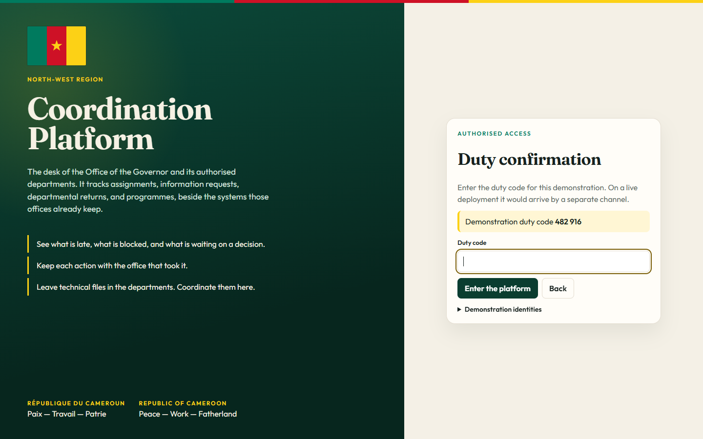
The second step of sign-in. The password alone does not open the desk. The duty code has to be entered as well.
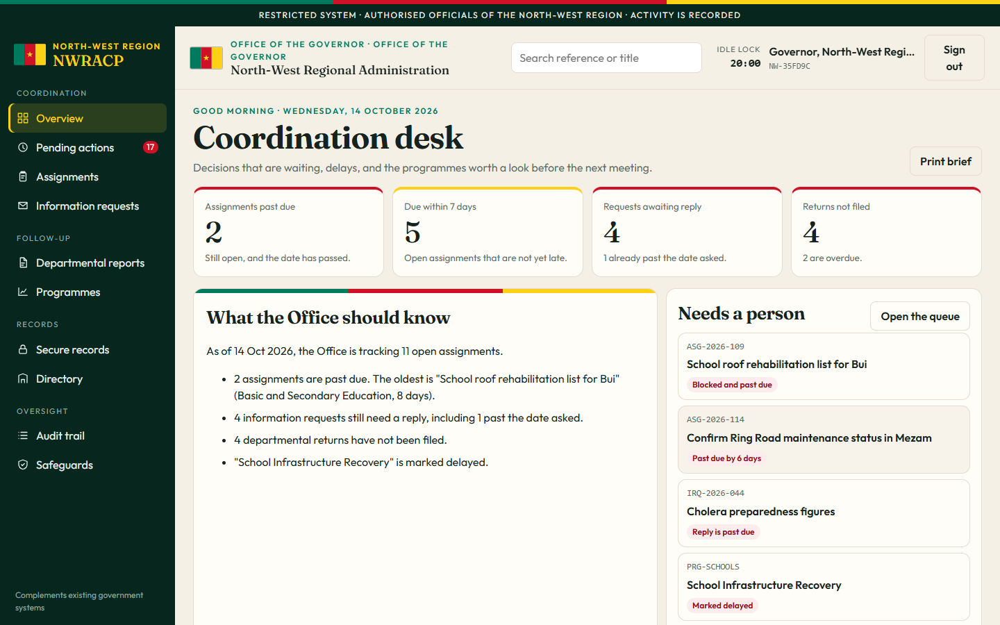
This is the one dashboard, called the Coordination desk. It shows how many assignments are late, what is due this week, which requests still need a reply, and which departmental returns have not been filed. Beside the numbers is a short brief and the items that need a person now, such as the Bui school roofs and the Mezam Ring Road.
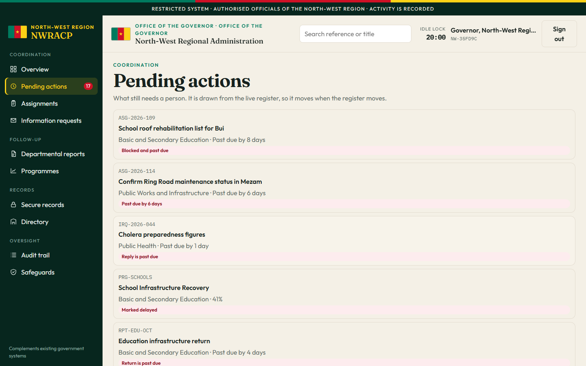
The personal queue. For the Governor it is the regional list. For a department lead it shrinks to that department only. Red means past due or blocked. Yellow means due soon or waiting for a decision.
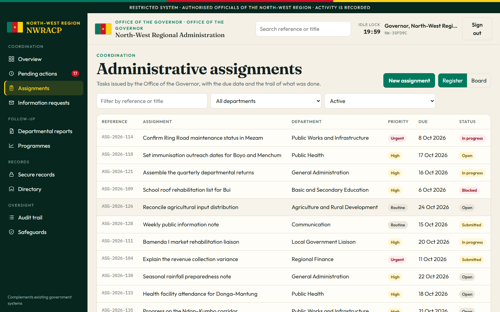
Tasks the Office gives a department. Public Works confirms the Mezam road sections. Public Health sets immunisation dates. Education’s roof list for Bui is blocked. A department updates its own task. Only the Governor’s office can close it.
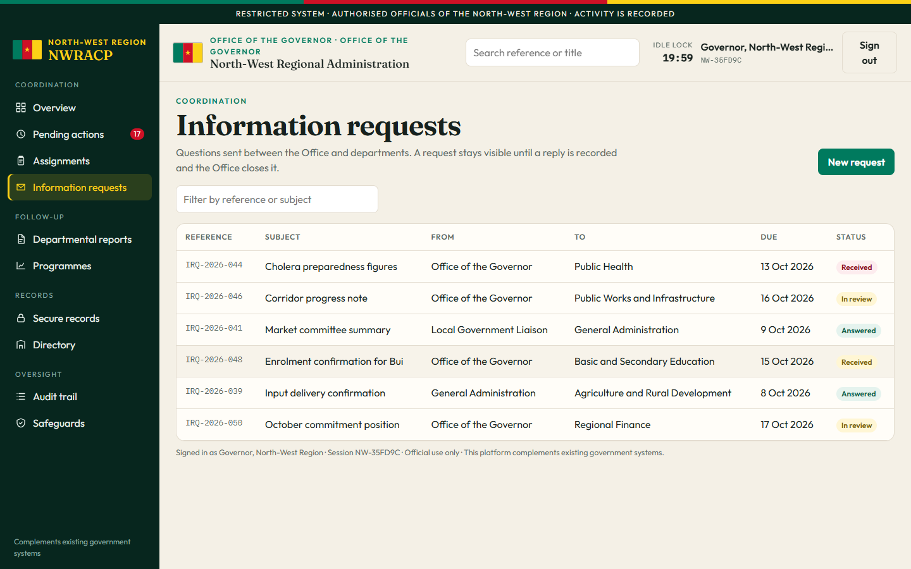
Questions sent from one office to another. The Governor’s office asks Public Health for cholera preparedness figures. The request stays visible until a reply is recorded and the Office closes it.
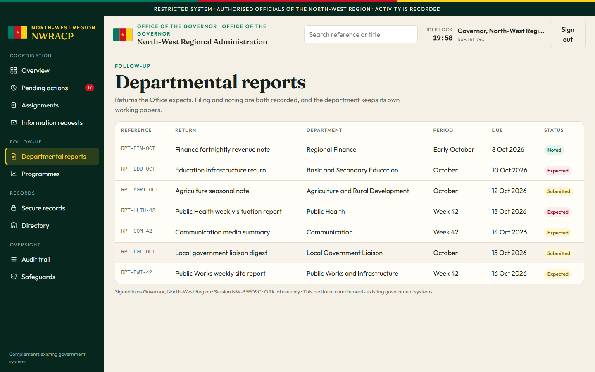
The regular returns the Office expects: a weekly health situation report, a works site report, an education infrastructure return. The department files a short summary. The full file stays in the department.
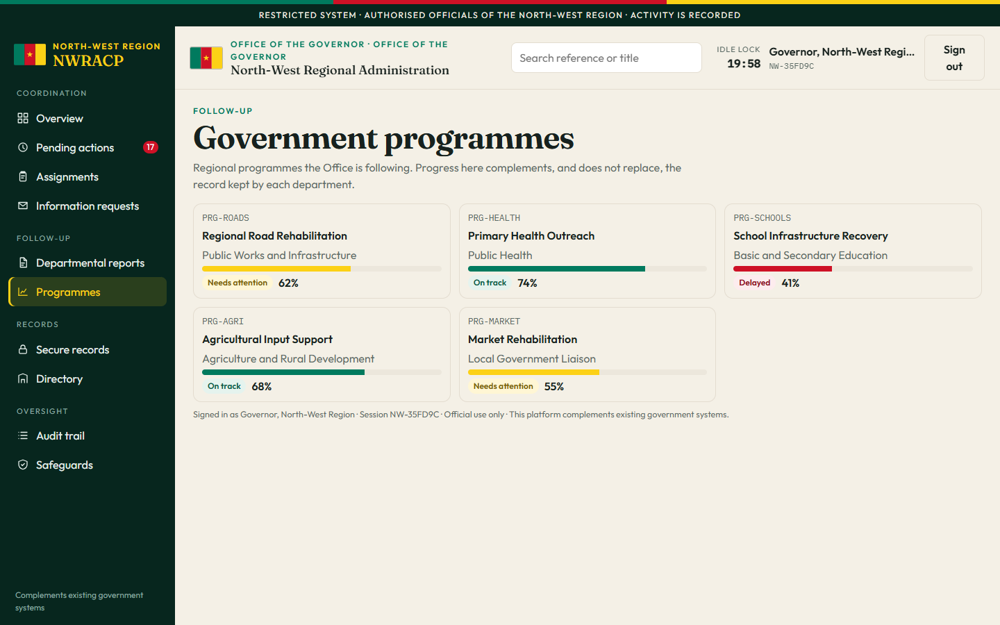
Longer efforts the Office is following. Roads need attention. School infrastructure is delayed. Health outreach and agricultural inputs are on track. These bars are a coordination view. They do not replace the department’s own project file.
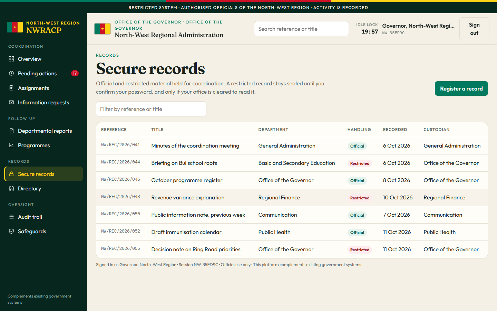
Notes worth keeping. Official records can be read across the offices. Restricted records, such as the revenue explanation, stay hidden from offices that are not cleared, and open only after a password confirmation.
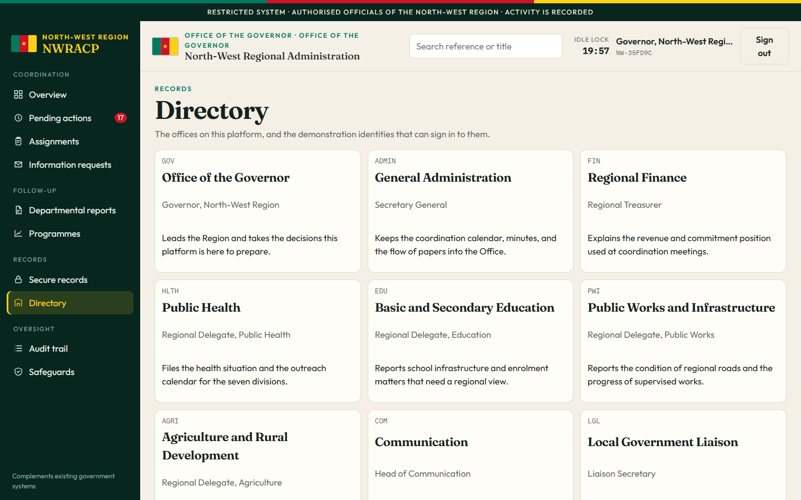
The nine offices on the platform and what each one is for, followed by the demonstration identities that can sign in.
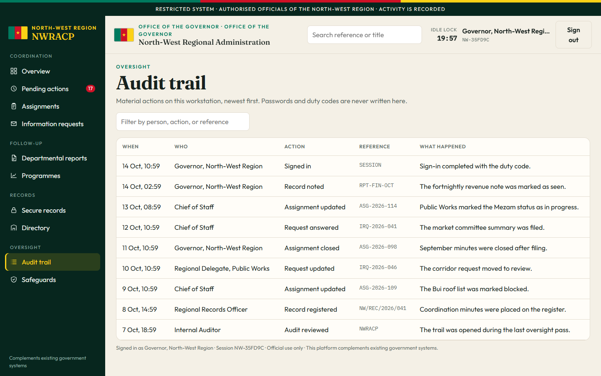
Who did what, newest first. Open to the Governor, the Chief of Staff, and Internal Audit. Passwords are not written here. A department lead does not see this section.
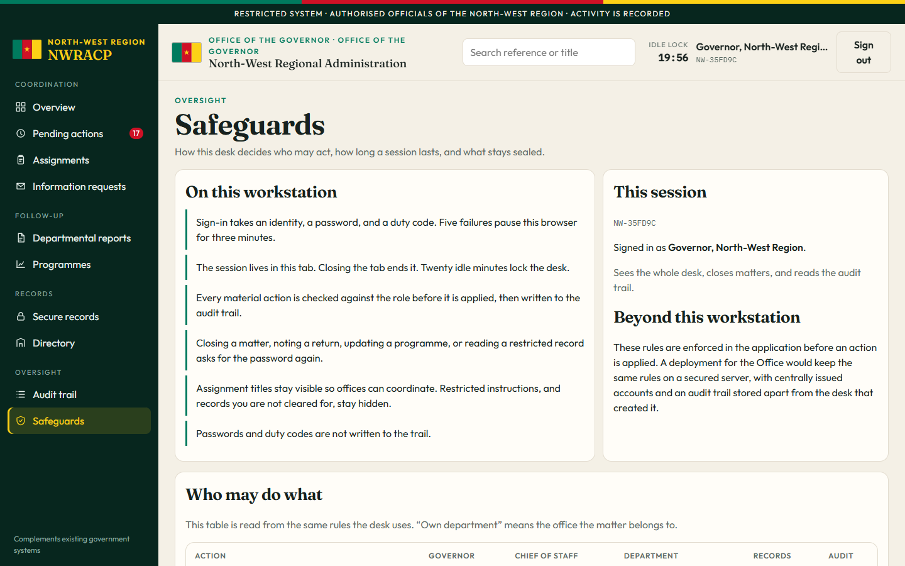
The rules of the desk: two-step sign-in, a pause after repeated failures, a lock after twenty idle minutes, and a table of which role may do what.